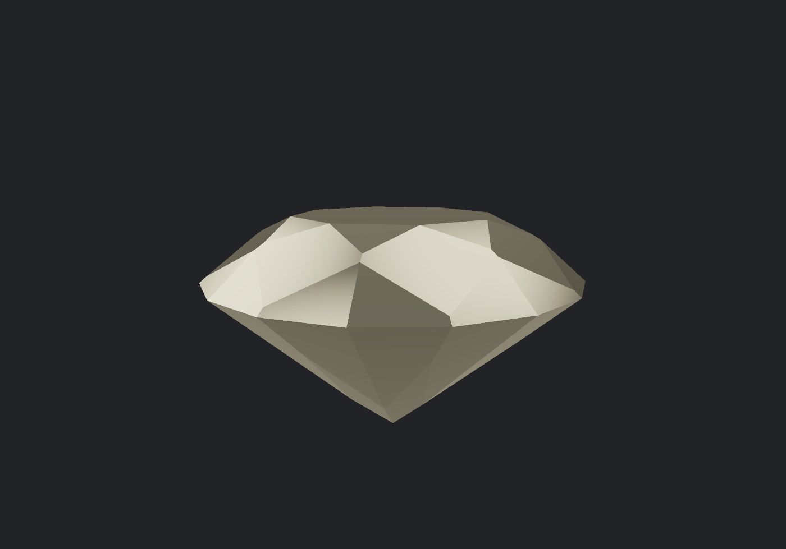

Prism · WebGPU renderer
A physically-based spectral ray tracer, written from scratch against raw WebGPU.
No three.js. No framework. No build step. One 805-line HTML file that intersects a 65-facet gem as 65 half-spaces and traces light at individual wavelengths rather than as RGB — and still runs at interactive frame rates.

Three decisions that make this hard
Rendering a shiny stone is easy — every engine ships an environment map and a torus knot tutorial. Three choices here are not easy, and they are the whole project.
1. Spectral, not RGB
A ray is not tinted red, green and blue. It carries a wavelength sampled from 400–700 nm, and the stone's refractive index is computed from that wavelength every single time. That is what makes fire real rather than painted: the coloured flashes a diamond throws are dispersion, and dispersion only exists if you compute it.
2. A gem as 65 half-spaces, not a triangle mesh
The stone is not a mesh. It is the intersection of 65 planes. A ray misses the solid unless it is inside every half-space, which means one ordered loop over 65 planes replaces a mesh traversal, a BVH, and every floating-point normal you would otherwise interpolate. It is exact, it is branch-free, and it fits in a uniform buffer.
3. From scratch
Buffers, bind groups, uniform layouts, the render pipeline, WGSL, the readback path for PNG export — all of it, against the raw API. There is no engine to blame and no abstraction to hide behind, which is precisely why it was worth doing.
The facet geometry
The facet rings are not eyeballed. A facet that runs down to the girdle
circle sits at plane distance sin(a) for tilt a;
the table height follows from the crown angle and the table radius. The
resulting proportions come out at the textbook figures for a
34.5° / 40.75° round brilliant without being tuned: a 53% table,
~16% crown height, ~43% pavilion depth, ~59% total depth.
| Ring | Count | Angle from girdle plane |
|---|---|---|
| Table | 1 | flat |
| Star facets | 8 | 22° |
| Bezel (kite) facets | 8 | 34.5° |
| Upper girdle facets | 16 | 42.5° |
| Girdle band | 8 | vertical |
| Lower girdle facets | 16 | 42.5° |
| Pavilion mains | 8 | 40.75° |
| Total | 65 |
The optics
- Fresnel. At each surface the code splits the ray by angle. Diamond reflects 17.2% of light straight back at normal incidence — a sixth of it — which is exactly why it out-sparkles glass.
- Cauchy dispersion.
n(λ) = 2.38 + 0.0115/λ², giving a refractive-index spread of about 0.048 across the visible range. - Total internal reflection. Past the critical angle (24.4° for diamond into air) the ray does not leave. The pavilion is a trap, and that trap is the point.
- Colour. Each wavelength is converted to RGB and weighted by luminance, so the spectrum reconstructs honestly instead of being invented.
Interactive, then still
Interact at 6 wavelengths with no anti-aliasing; once the view has been still for 600 ms the engine re-draws itself once at 4× AA and 16 wavelengths, then stops submitting work entirely until something changes. A refined frame costs about 140 ms, so repeating it would be a permanent stutter rather than a settle — and would keep the GPU busy forever on a page nobody is touching.
What I measured
Timed on the GPU itself rather than with a frame counter — that distinction matters more than it sounds, and the first bug below is what happens when you get it wrong.
| Configuration | ms/frame | fps |
|---|---|---|
| Brilliant, 6 wavelengths, 3 bounces | 36 | 28 |
| Prism preset, same size | 15 | 68 |
| Brilliant, 2000×1400 | 73 | 14 |
| 20 wavelengths, 6 bounces, 2× AA — the top end | 248 | 4 |
Read the spread, not the digit
Five consecutive runs of identical settings gave 44.5, 35.5, 36.3, 36.7 and 36.3 ms. An earlier reading of the same configuration was 21 ms. A browser GPU is not reproducible to two digits, so I quote medians and expect ±30%. A benchmark table without a spread is a table I would not trust.
Three ways my own benchmark lied to me
This is the part I would want a reader to look at. Every one of these bugs produced a plausible number from a broken renderer, and every one was caught by validating the output rather than the speed.
-
The benchmark that measured nothing
The renderer's resolution control is a fraction of the canvas. I called it with
res: 912, meaning "912 pixels wide". It read that as "912 times the canvas", asked the GPU for a 1.2-million-pixel-wide texture, failed validation, and then poisoned every subsequent GPU call withinvalid due to a previous error.Through all of it, the benchmark reported a confident 63.5 fps — because a pipeline that submits nothing is extremely fast. I only caught it by opening the console.
An invalid pipeline benchmarks beautifully. Validate the output, not just the speed. -
The facets that were mathematically present and invisible
The 16 upper-girdle facets were generated correctly and showed up nowhere. Two facet cones that both touch the girdle circle are nested: the shallower cone is always further out, so it hides the steeper one completely. Sixteen facets quietly became zero.
Geometry can be correct and still not be visible. Count facets in the pixels, not in the array. -
I guessed a distance instead of deriving it
I set the star facet plane distance by eye. The resulting cone sat below the table and swallowed the entire crown — the first "brilliant" rendered as a smooth dome with a pinhead table. The star plane has to pass through the midpoint of a table edge; derived rather than guessed, the star triangles appeared immediately.
Facet geometry is a derivation, not a vibe.
The full list runs to nine, including a probe that dispatched 65,536 workgroups against a 65,535 limit and reported a number anyway, a ray-vs-polyhedron test that computed only the entry slab so every ray reported a hit and the stone filled the screen, a preset that was quietly authoring a *prism* with diamond's refractive index, and one where my own arithmetic was wrong and the code was right. All of them are written up in the project's verdict document.
What's not done
This is a correct engine that has not yet been art-directed, and the gap is specific enough to name.
- It is not photorealistic, and I would not claim it is. The environment is an analytic function, not an HDRI. Without sharp bright-against-dark structure in the surroundings, the fire stays subtle — you can compute dispersion perfectly and still have nothing to refract.
- Nothing reads as coloured stone. Every material is a pure dielectric with a Cauchy index and no absorption, so a sapphire is impossible.
- The tone map is raw Reinhard, which flattens exactly the highlights a gem should flash with.
- The interactive loop cannot be tested headlessly. Browsers throttle
requestAnimationFrameto zero in a background tab — measured, 0 frames in 1.5 seconds — so everything above is driven through an API instead. I added a one-frame test hook for that reason.
Also shipped: The Directory
A second, deliberately different piece. A searchable directory of independent jewellers who take on custom work — static HTML, no dependencies, no build step, no server, runs off a local file. The engine above proves I can build hard things; this one proves I finish and ship them.
It is also the lead list for the commercial version of the renderer, which is the honest reason it exists.
Work with me
I build graphics and performance-critical front-end work: WebGPU and WebGL, rendering, simulation, and the unglamorous profiling that makes them fast. Open to contract work and to roles.